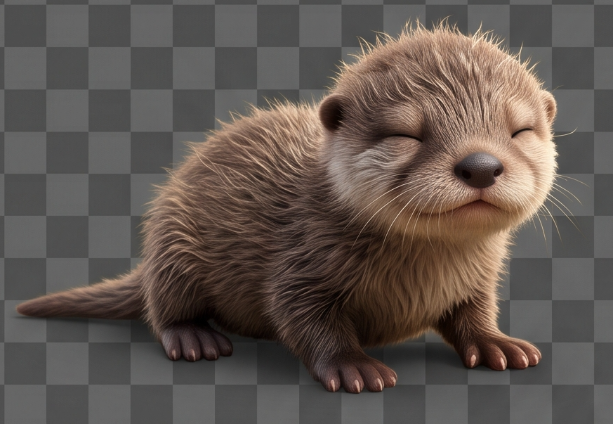

Stade 1/4 · Nouveau-né
Fichier : images/loutre_nouveau_ne.png
0 XP
Prochain stade : 80 XP

🦦
Image introuvable
Touches la loutre pour lui faire un câlin ✨
Tester les 4 stades directement
🪙 50 piècesPrêt : cliquez sur un stade ou gagnez de l'XP pour observer l'évolution.